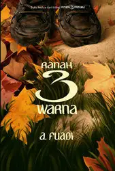
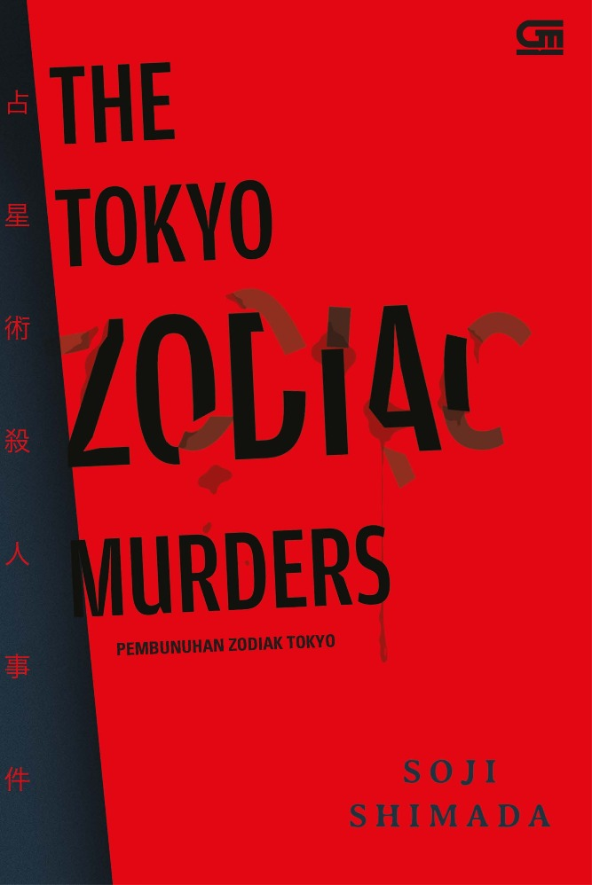
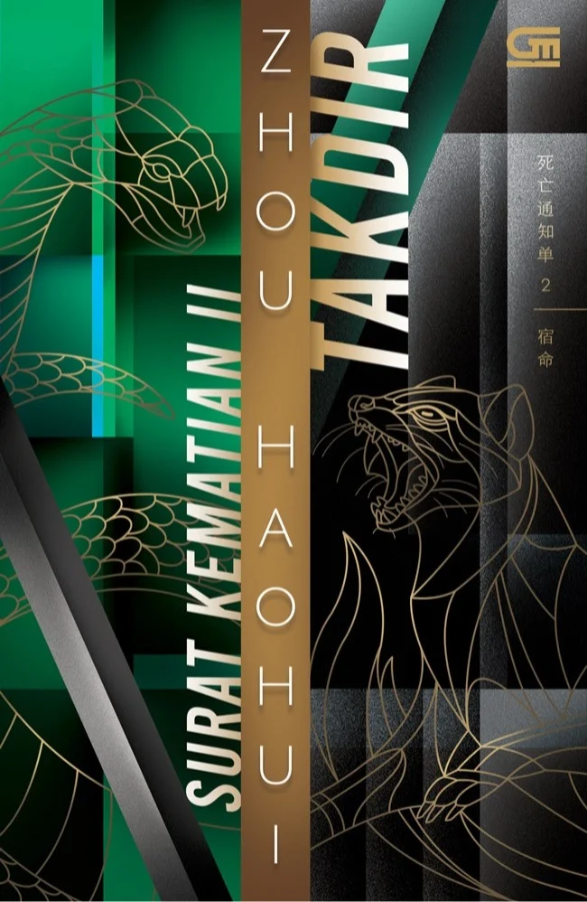

Buku Cerita Anak Umur 1-3 Tahun
Rp45.000
Buku ini dirancang untuk membantu anak menjalani proses toilet training secara mandiri dengan cara yang sederhana dan menyenangkan. Melalui ilustrasi yang ramah anak dan bahasa yang mudah dipahami, anak diajak mengenal kebiasaan ke toilet tanpa tekanan maupun rasa takut. Pendekatan yang digunakan membantu anak membangun kepercayaan diri dan kemandirian secara bertahap, sehingga proses belajar terasa alami. Buku ini cocok digunakan oleh orang tua di rumah maupun pendidik anak usia dini sebagai pendamping pembiasaan hidup bersih.

Buku Cerita Untuk Anak-anak Umur 3-6 Tahun
Rp55.000
“Aku dan Tubuhku” membantu anak mengenal tubuhnya sendiri secara positif dan sehat. Materi disajikan melalui cerita ringan dan ilustrasi penuh warna yang menarik perhatian anak. Buku ini mengenalkan bagian tubuh, fungsi dasar, serta pentingnya merawat tubuh dengan cara yang sesuai dengan tahap perkembangan anak. Dengan pendekatan yang aman dan edukatif, buku ini mendukung pembentukan kesadaran diri, rasa percaya diri, serta pemahaman awal tentang kesehatan tubuh.

Buku Cerita Untuk Anak Umur 6-8 Tahun
Rp55.000
Buku ini mengajak anak memahami nilai-nilai kehidupan melalui pendekatan filsafat yang ringan dan relevan dengan dunia anak. Cerita dan ilustrasi disusun untuk merangsang cara berpikir, membantu anak belajar mengambil keputusan, serta memahami konsep seperti tanggung jawab, kejujuran, dan keberanian dalam kehidupan sehari-hari. Disajikan tanpa kesan menggurui, buku ini cocok sebagai bacaan pendamping di rumah maupun di sekolah untuk mendukung pembentukan karakter dan pola pikir anak secara bertahap.

Buku Cerita Untuk Remaja Umur 14-18 Tahun
Rp125.000
Novel ini mengisahkan enam remaja dari latar belakang berbeda yang menempuh pendidikan di sebuah pesantren dengan disiplin ketat dan visi besar. Persahabatan, persaingan sehat, serta latihan intelektual membentuk karakter mereka secara perlahan namun kuat. Prinsip Man Jadda Wajada menjadi napas utama cerita, menekankan bahwa mimpi besar hanya dapat diraih melalui kerja keras dan ketekunan. Kisah ini menyoroti proses panjang sebelum keberhasilan, bukan sekadar hasil akhirnya.

Buku Cerita Untuk Remaja Umur 15-18 Tahun
Rp125.000
Cerita berlanjut pada fase hidup tokoh utama yang lebih kompleks dan penuh tekanan realitas. Ia menghadapi keterbatasan finansial, kegagalan, serta perjuangan bertahan di lingkungan asing yang menuntut mental kuat. Konflik batin dan ketidakpastian masa depan menjadi fokus utama alur. Novel ini menggambarkan bagaimana konsistensi dan daya tahan diuji saat idealisme berhadapan langsung dengan kenyataan.
Buku Cerita Untuk Dewasa Umur 16-20 Tahun
Rp110.000
Novel ini menyajikan thriller psikologis tentang seorang perempuan yang hidup di bawah bayang-bayang kejahatan masa lalu keluarganya. Narasi dibangun melalui ketegangan batin, rasa curiga, dan informasi yang sengaja disamarkan. Manipulasi psikologis dan rahasia kelam perlahan terungkap seiring alur bergerak cepat. Cerita ini menantang pembaca untuk mempertanyakan kebenaran hingga akhir.

Buku Cerita Untuk Dewasa Umur 17-20 Tahun
Rp95.000
Sebuah kasus pembunuhan berantai yang terinspirasi astrologi dan simbol zodiak menjadi pusat cerita. Misteri lama yang tampak mustahil dipecahkan dibongkar melalui penalaran logis dan detail ekstrem. Alur disusun sebagai teka-teki intelektual yang menuntut konsentrasi tinggi. Novel ini dikenal sebagai karya klasik misteri logika yang menguji kecerdasan pembacanya.

Buku Cerita Untuk Dewasa Umur 18-21 Tahun
Rp129.000
Surat Kematian II: Takdir melanjutkan kisah konflik antara penegak hukum dan seorang vigilante bernama Eumenides, yang mengirim “surat kematian” sebagai tanda hukuman atas nama keadilan di luar sistem hukum. Dalam seri ini, surat-surat kematian baru muncul, menguji ketangkasan polisi dan membawa mereka ke dalam permainan moral yang rumit, sementara sang algojo terus berada selangkah di depan. Cerita penuh teka-teki, investigasi kriminal, dan ketegangan psikologis yang intens..

Buku Cerita Untuk Dewasa Umur 18-21 Tahun
Rp129.000
Surat Kematian (Death Notice) adalah thriller misteri yang memulai trilogi populer karya Zhou Haohui. Cerita berpusat pada seorang vigilante bernama Eumenides yang mengirim “surat kematian” kepada individu-individu dengan catatan kriminal yang lolos dari hukum, menyatakan nama korban, kejahatan mereka, dan tanggal eksekusi yang akan datang. Hal ini memicu kepanikan publik dan tantangan langsung kepada pihak kepolisian. Sebuah tim elit bernama Satuan Tugas 418 dibentuk untuk mengungkap siapa Eumenides dan menghentikannya, tetapi semakin mereka menyelidik, semakin misteri itu terhubung ke kasus lama yang belum terselesaikan dan mengungkap rahasia tersembunyi di antara anggota tim itu sendiri.

Buku Cerita Untuk Dewasa Umur 5-6 Tahun
Rp45.000
Buku ini mengenalkan dasar-dasar agama Islam secara sederhana dan visual kepada anak usia dini. Materi disampaikan melalui ilustrasi menarik, bahasa ringan, dan contoh yang dekat dengan kehidupan anak. Cocok untuk membangun pemahaman awal tentang ibadah, akhlak, dan nilai-nilai Islam sejak dini. Dirancang sebagai bacaan pendamping belajar di rumah maupun di sekolah.